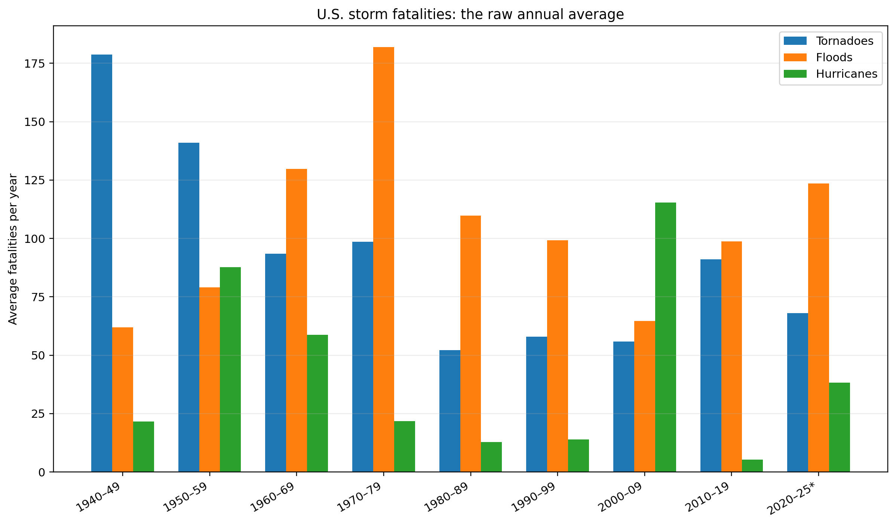
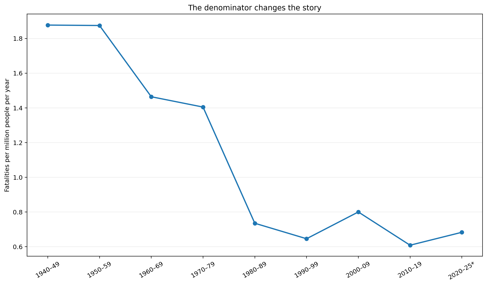
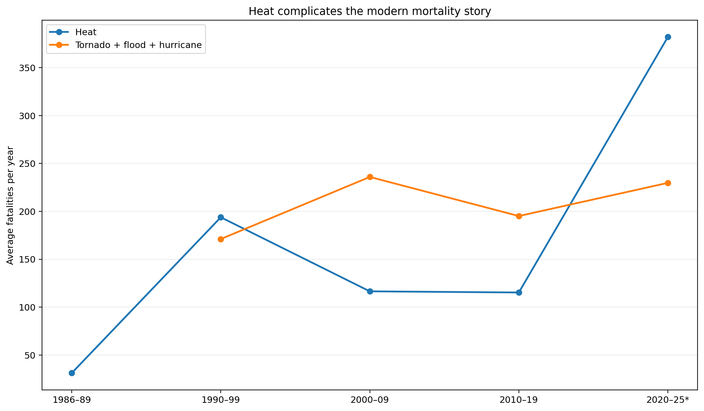
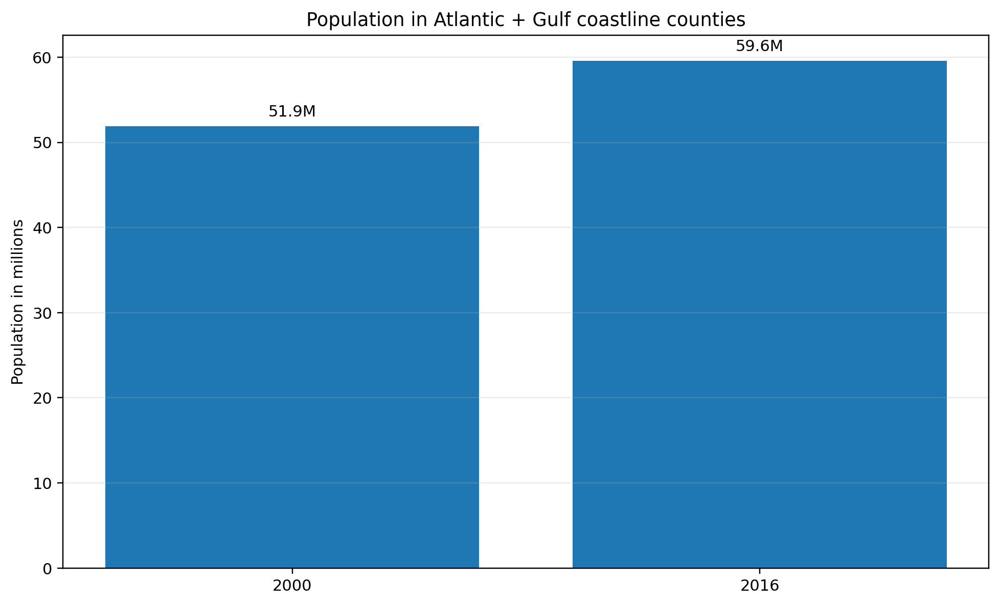

Average tornado + flood + hurricane fatalities over 1940–2025.
Approximate decline in storm fatalities per million people from the 1940s to the 2010s.
Average NWS heat fatalities in 2020–25, a partial six-year period.
1. Start with the raw count.
The number of deaths per year does not move smoothly. Tornadoes dominate the early record; floods become especially important in the 1960s and 1970s; hurricanes create occasional large spikes.

2. Then put a denominator underneath it.
A growing country creates more opportunities for exposure. I define death intensity as fatalities per million U.S. residents per year. That makes the change in risk easier to see than raw counts alone.

The economic interpretation
The decline is consistent with adaptation: better forecasts, warning systems, construction, evacuation, emergency response and other technologies may have reduced the probability that a hazardous event becomes a fatal exposure. But this descriptive dataset cannot tell us how much each factor contributed.
3. Heat makes the conclusion harder.
The NWS series begins reporting heat fatalities in 1986. The 1995 heat wave is a huge outlier, while the 2020–25 period is also high. This means “weather deaths are falling” is too broad a conclusion.

Important measurement distinction: NWS fatality counts attribute deaths to hazards recorded in Storm Data. Burke et al. (2025) estimate temperature-attributable mortality using detailed mortality and temperature data across countries. Those are different concepts and should not be compared as if they were the same statistic.
4. People do not necessarily move away from risk.
For one exposure check, consider hurricanes. The Census Bureau reported that Atlantic and Gulf coastline counties grew from 51.9 million residents in 2000 to 59.6 million in 2016. The Gulf Coast region grew 24.5% over that period.

Exposure is an economic choice, not just a weather fact.
Jobs, housing, amenities, family networks and infrastructure create benefits from living in particular places. A risky location can remain attractive when its expected benefits exceed the perceived costs. Population growth in exposed areas therefore complicates any simple story that Americans are “adapting” by retreating.
But wait.
A falling fatality rate is evidence of an outcome—not proof that climate risk is falling. These data do not isolate climate change, adaptation, income, forecasting, emergency management or changes in exposure. Nor do they capture every temperature-related death.
Burke et al. find that cold accounts for more temperature-attributable mortality than heat in their sample, while hotter places show some adaptation to local climate. Their results reinforce the need to distinguish hazard, exposure and measured mortality rather than treating every “weather death” number as interchangeable.
Sources & methods
Weather fatalities: NOAA/National Weather Service Weather-Related Fatality and Injury Statistics and the NWS 80-Year Severe Weather Fatalities table. The annual values used here are from the table supplied with the ECON 238 assignment.
Population: U.S. Census Bureau historical population materials and U.S. Bureau of Economic Analysis annual population estimates. Death intensity = annual-average fatalities ÷ average population × 1,000,000.
Migration/exposure: U.S. Census Bureau, “60 Million Live in the Path of Hurricanes,” using 2000 and 2016 population estimates for coastline counties.
Temperature mortality: Burke et al. (2025), Understanding and Addressing Temperature Impacts on Mortality, NBER Working Paper 34313.
Qualification: 2020–25 is a partial period. The NWS heat series begins in 1986. The NWS hazard categories also separate tropical-cyclone wind deaths from fatalities attributed to flooding and tornadoes.